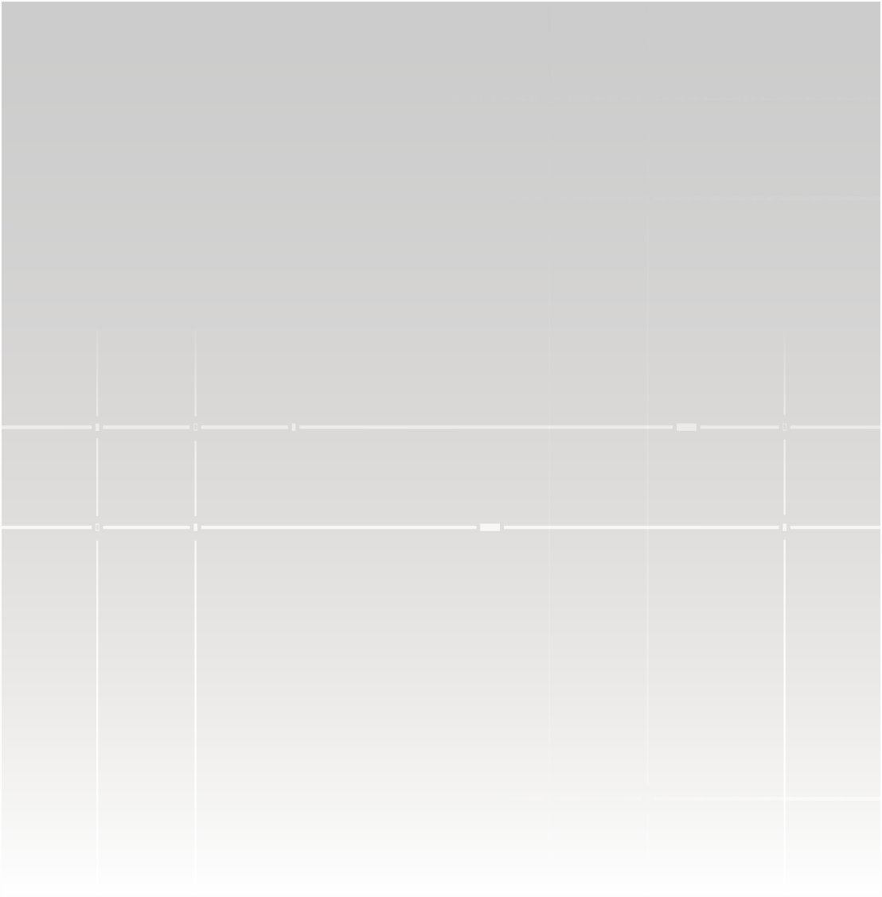
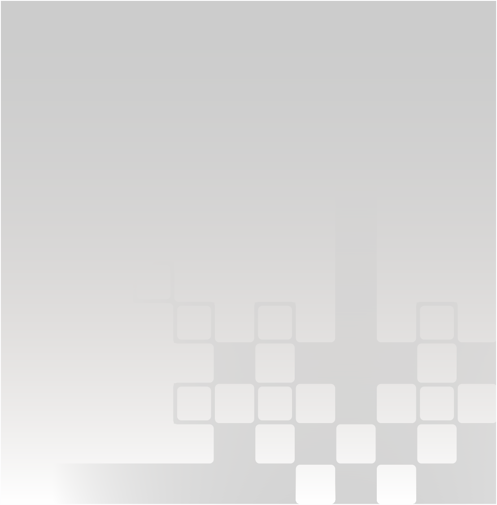
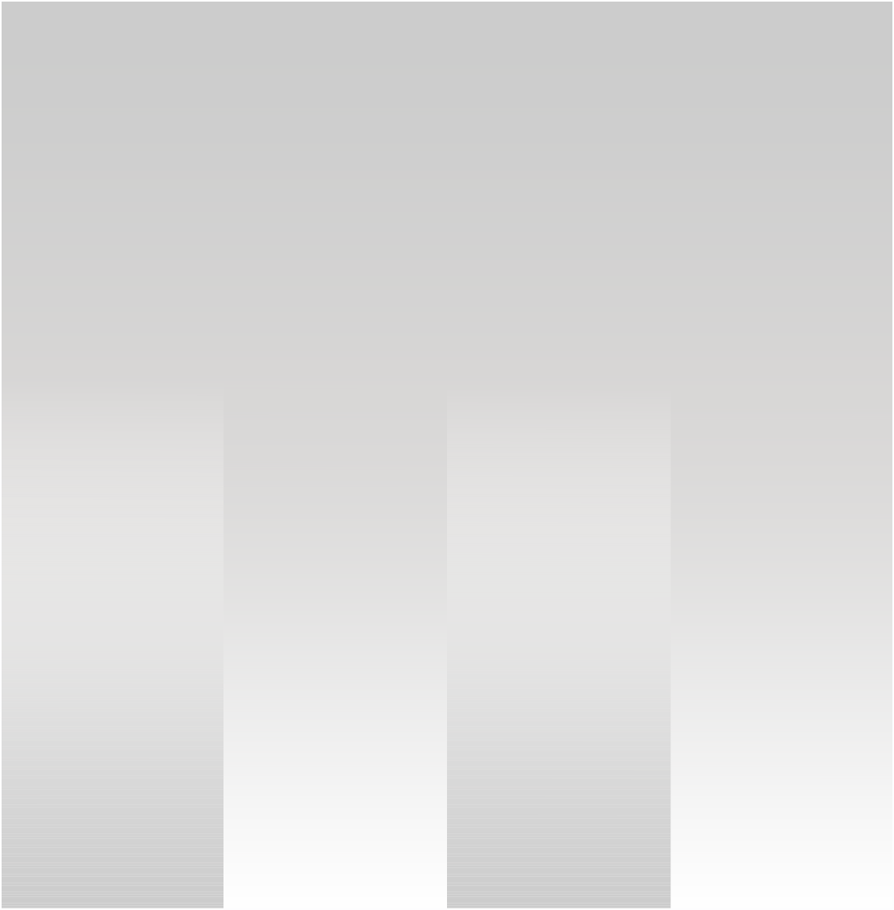

ABOUT US
We Orient The Future
Be Systematic
사주라는 오래된 언어를 오늘의 데이터로 다시 읽습니다. 개인의 패턴을 분석하고, 집단의 흐름으로 확장해, 우리가 향하는 방향을 함께 가늠합니다.
← HomeABOUT FOUR FUTUR
Saju By Its Nature, Data
사주는 3,000년 동안 축적된 관찰의 기록입니다. FOUR FUTUR는 그 구조를 데이터의 언어로 드러내, 개인의 패턴을 집단의 흐름 속에서 신뢰감 있게 읽어냅니다.
01 / SYSTEM3,000년의 관찰이 쌓은 신뢰
사주는 오랜 시간 수많은 삶의 패턴이 관찰되고 기록되어 온 체계입니다. FOUR FUTUR의 모든 해석은 이 축적된 데이터 위에서 시작됩니다.
02 / ANALYSIS사주 속 네 기둥으로 분석하는 개인
생년월일시에서 도출된 네 기둥과 오행의 비율을 분석합니다. 나의 성향과 강점, 부족한 기운, 그리고 올해의 흐름까지 하나의 리포트로 정리해 확인할 수 있습니다.
03 / DATA데이터로 관찰하는 사주의 흐름
나와 비슷한 사주를 가진 사람들이 얼마나 있고, 어떤 경향을 보이는지 함께 살펴봅니다. 혼자만의 해석을 넘어, 집단의 데이터 속에서 나의 위치를 확인할 수 있습니다.
04 / ENHANCE기운의 균형을 맞추는 오브젝트
분석만으로는 충분하지 않습니다. 내 사주에 맞게 설계된 오브젝트와 실천으로, 부족한 기운을 일상에서 채워갈 수 있습니다.
OUR VALUES
Our Core Values
사주는 3,000년 동안 축적된 관찰의 기록입니다. FOUR FUTUR는 그 구조를 데이터의 언어로 드러내, 개인의 패턴을 집단의 흐름 속에서 신뢰감 있게 읽어냅니다.

Built On Structure
사주를 체계적으로 전달하는

Decode By Visual
사주를 시각 언어로 해독하는

Trust Through Data
사주의 데이터적 본질을 드러내어 신뢰를 더하는